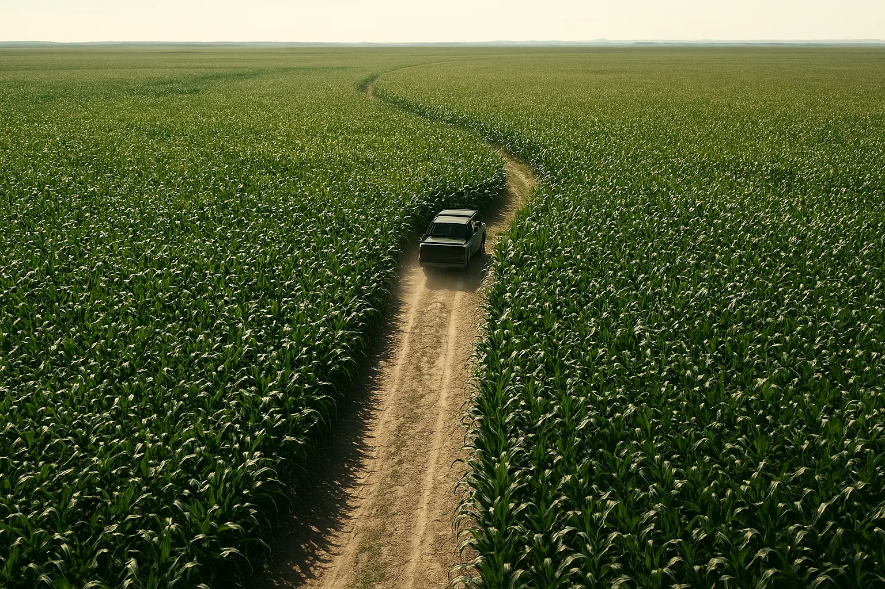
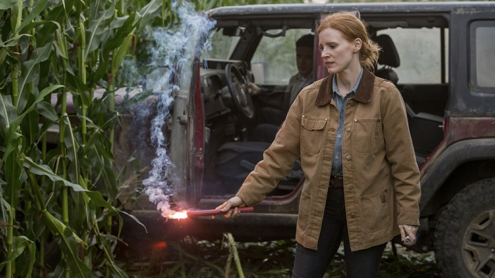
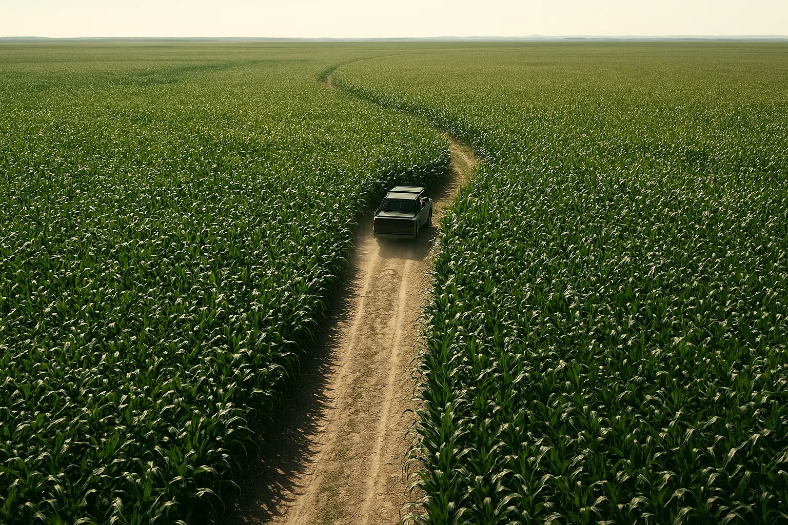
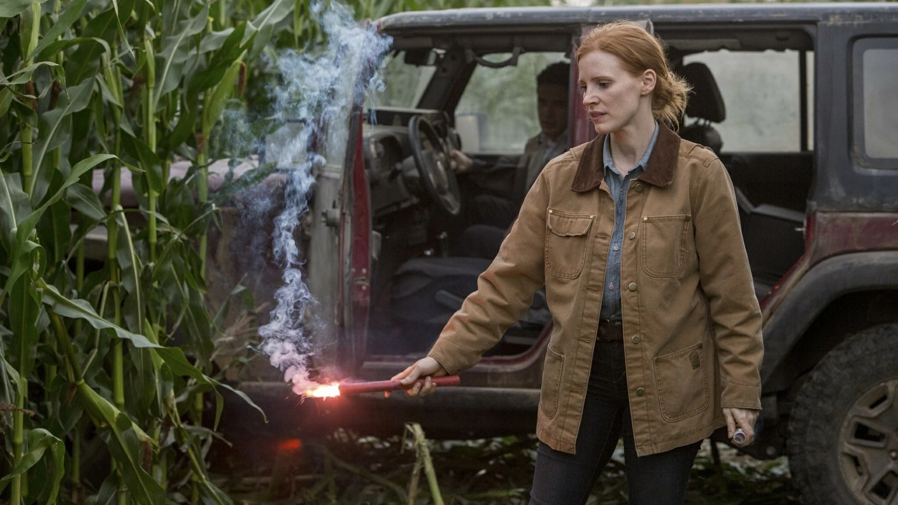

INTERESTELAR
Asesoramiento de Kip Thorne: El físico ganador del Nobel Kip Thorne trabajó como consultor
científico. Sus ecuaciones sobre agujeros negros generaron los efectos visuales de Gargantúa.
El agujero negro más realista: Los efectos de Gargantúa se basaron en simulaciones de relatividad general,
lo que llevó a descubrimientos científicos publicados en revistas académicas.
El tiempo en Miller (el planeta oceánico): Cada hora allí equivale a 7 años en la Tierra, un efecto real de
la gravedad extrema cerca de un agujero negro.
El maíz era real: Nolan hizo plantar 500 acres de maíz en Canadá, que luego se vendieron con
ganancias.
La nave espacial usó miniaturas: En lugar de CGI, se construyó una maqueta a escala de la Endurance para las
tomas espaciales.
Los robots TARS y CASE eran físicos: Operados por actores en el set, con movimientos controlados por
joystick.
Ecuaciones reales: Las pizarras muestran fórmulas de física cuántica verificadas por Kip Thorne.
Premios Oscar (2015)
🏆
Mejores Efectos Visuales (Paul Franklin, Andrew Lockley, Ian Hunter, Scott Fisher).
 


